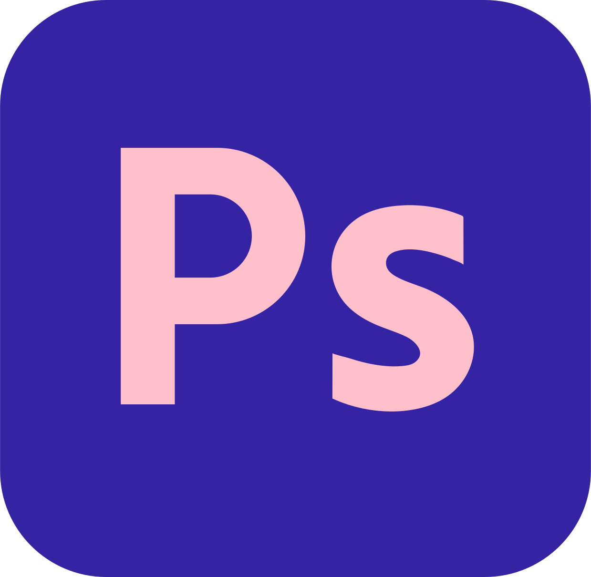
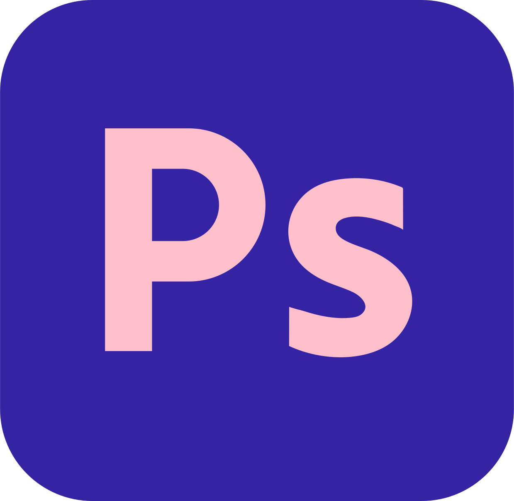

[quién soy?]
¡Hola! Mi nombre es Silvina pero me dicen Silvix! Soy Diseñadora Gráfica Junior e Ilustradora, resido en Buenos Aires, Argentina. Si te interesa darle vida a tus ideas de una manera creativa, estás en el lugar indicado!
[trabajo]
» Disponibilidad part-time
» Modalidad de trabajo híbrida.
[habilidades]
 
